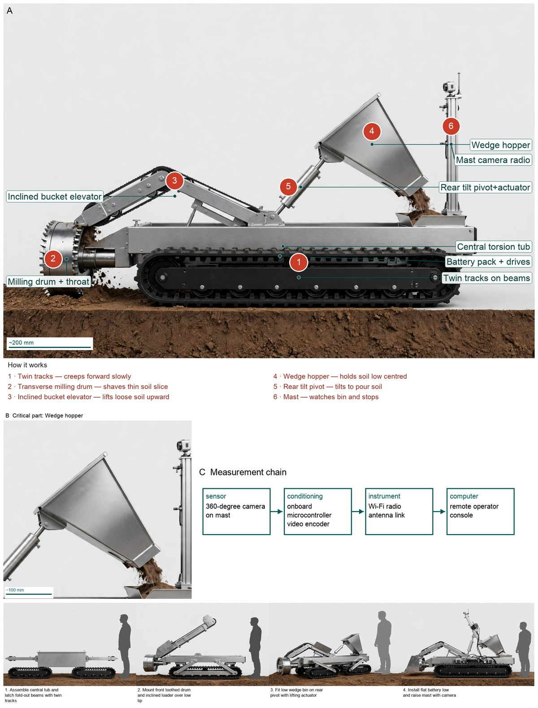
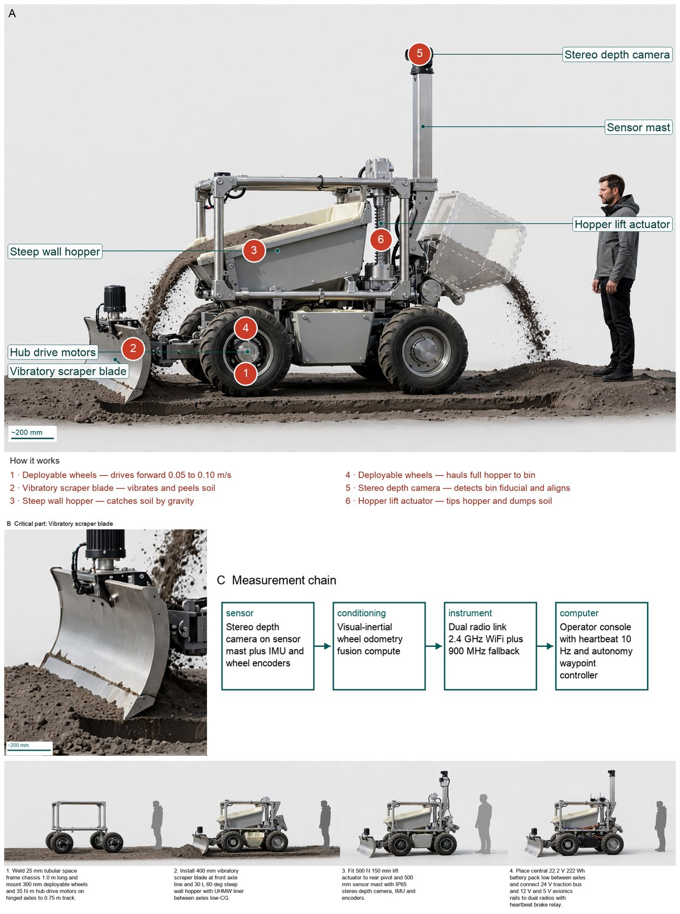
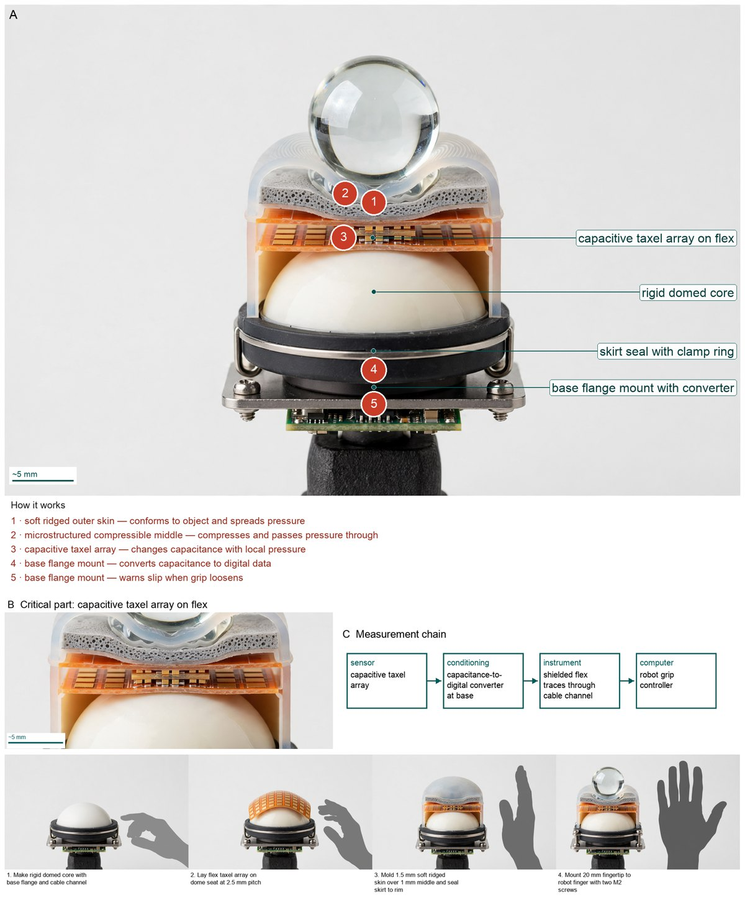
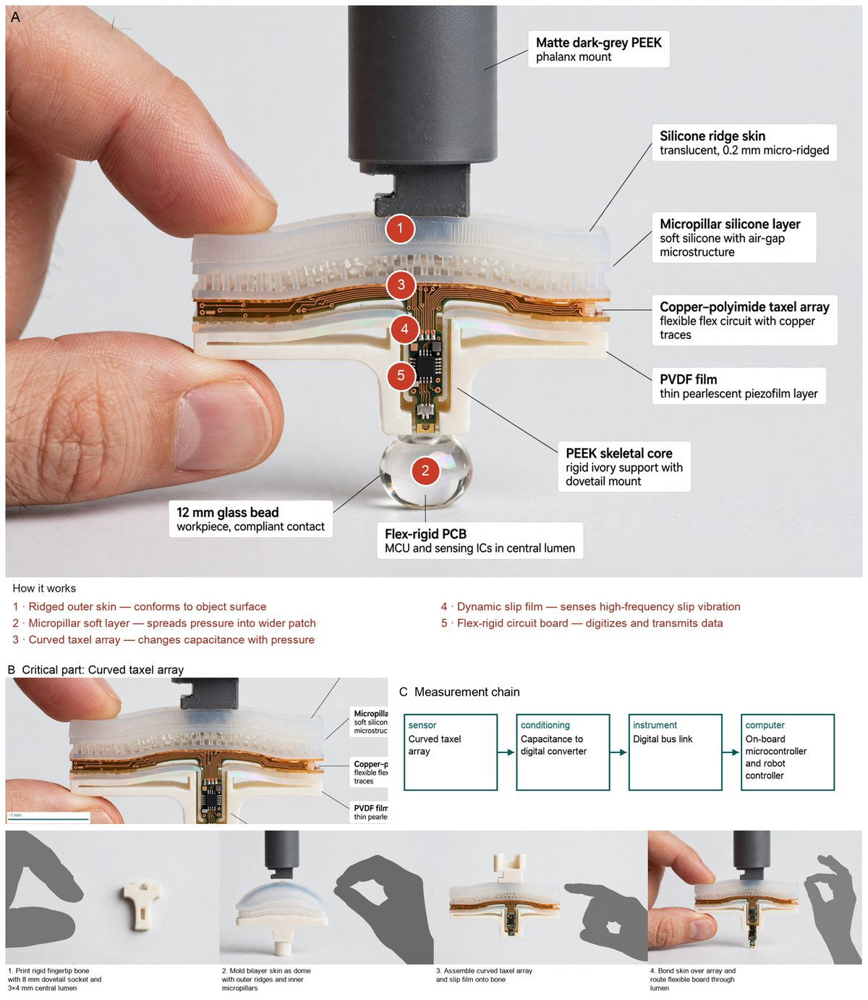
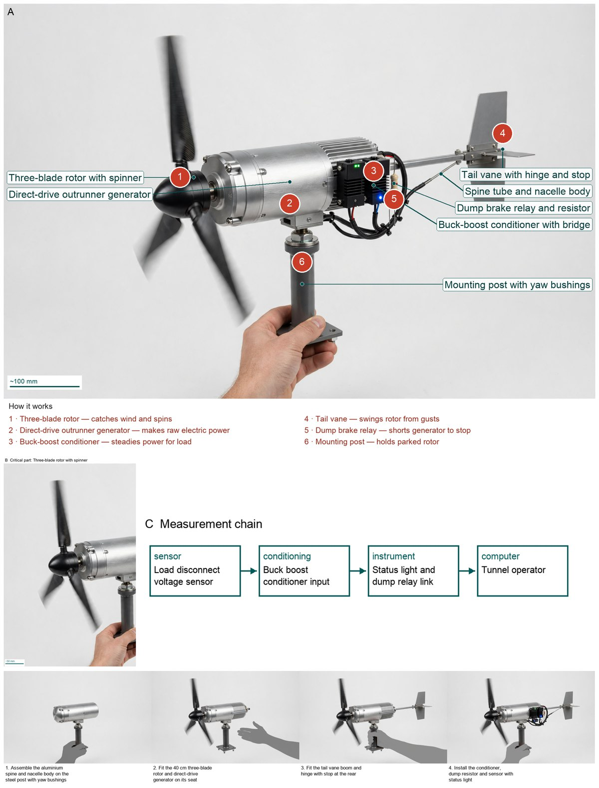
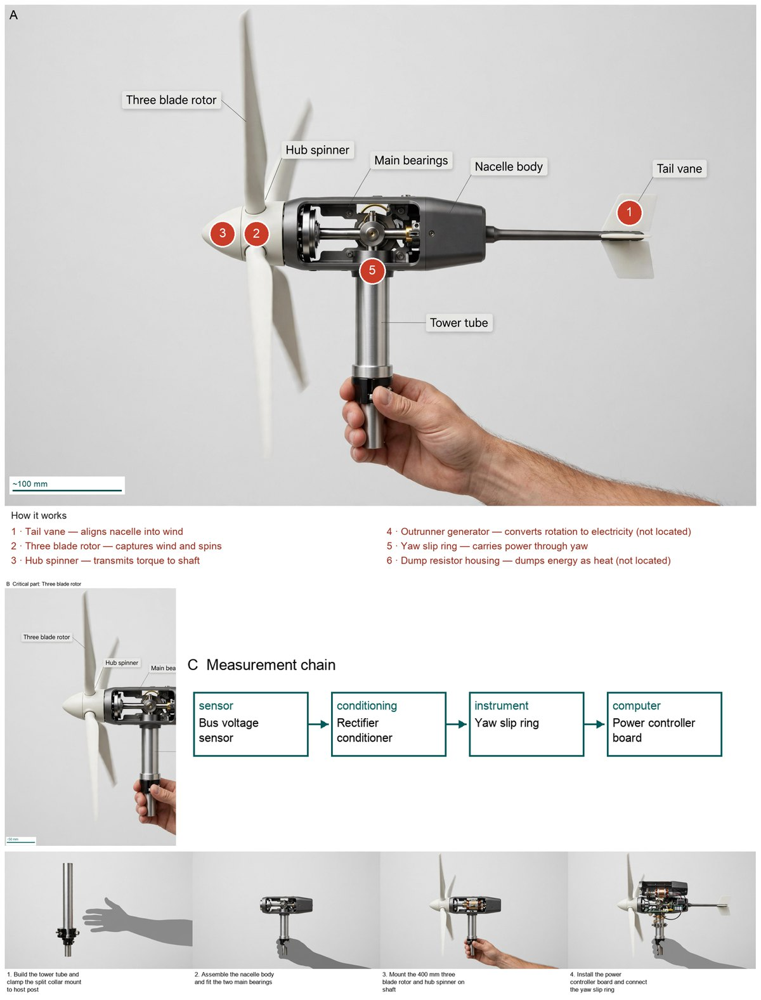

Hardware Scientist runs on the Meta Model API. Here the same code runs with its reasoning on Muse Spark Open, Meta's open-weights model served by Baseten, and its part masks on SAM 3, Meta's open-weights segmenter on a Modal GPU. The architecture is unchanged; one client file is swapped in. All three benchmark problems were solved and accepted, at the same cost and in about half the time.
| What the model does | Meta Model API run | Open-weights run |
|---|---|---|
| Council, Manager (chief designer), Evaluator, TextGrad optimizer, picture writer and critics | muse-spark-1.3Meta Model API | Muse Spark Open (meta-models/muse-spark-open-1026)816B mixture of experts, 42B active · Baseten, OpenAI-compatible Responses API |
| Part masks on the rendered device | sam-3.1Meta Model API | SAM 3 (facebook/sam3)open weights, image model, on a Modal A10G GPU |
| Literature search | hosted web searchMeta Model API | free web search + page and PDF readingplain code given to the model as two tools |
| Photoreal pictures | muse-image-1.0Meta Model API | muse-image-1.0Meta Model API: Meta has no open-weights image model |
| Problem | Meta Model API | Open weights |
|---|---|---|
| Lunar regolith excavator | 59 min · $2.49 · accepted | 17 min · $1.38 · accepted |
| Tactile fingertip sensor | 44 min · $2.31 · accepted | 18 min · $1.52 · accepted |
| Small wind turbine | 38 min · $1.79 · accepted | 42 min · $3.33 · accepted |
| Three designs | 141 min · $6.59 | 77 min · $6.80 |
Open-weights total: Baseten tokens and Meta pictures from the project ledger, plus SAM 3 on Modal from Modal's own billing (about $0.19 a run). Baseten lists Muse Spark Open at $1.25 per million input tokens, $0.15 cached and $4.25 output, the same as muse-spark-1.3. Both stacks ran the three problems in parallel.
Left: Meta Model API. Right: open weights. Each is the accepted design's final figure.






OpenClient keeps the same interface as the Meta client. Baseten does not
store conversations, so the client keeps each chain itself; the resent part is billed at the cached rate.Runs: open weights runs/20261103-210007, -210010, -210013 (turbine
figure -215821); Meta Model API runs/20261103-152604, -194701, -170525.
Details in JOURNAL.md.